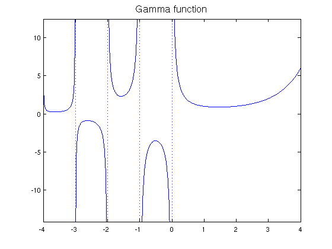
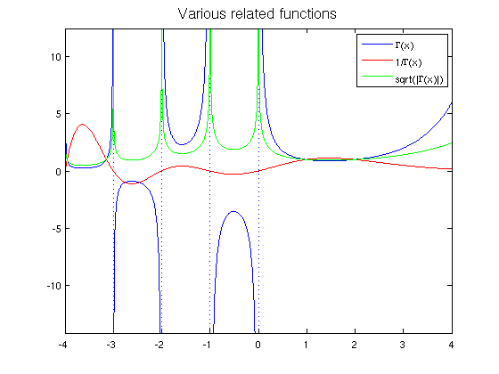

The gamma function and its poles
Nick Hale, December 2009
(Chebfun example approx/GammaFun.m)
This script displays some of the features introduced in version 3 for unbounded functions by demonstrating with the gamma function on the interval [-4 4].
The gamma function on [-4 4] has simple poles at the negative integers and zero. Chebfun can determine the locations and orders of these poles if it is called with the 'blowup' and 'splitting' flags on. The 'exponents' field of the output indicates that each pole is simple, that is, it has a singularity of type x^(-1).
LW = 'linewidth'; FS = 'fontsize'; MS = 'markersize'; gam = chebfun('gamma(x)',[-4 4],'blowup','on','splitting','on') plot(gam,'b',LW,1.6), hold on title('Gamma function',FS,16)
gam =
chebfun column (5 smooth pieces)
interval length endpoint values exponents
[ -4, -3] 23 Inf Inf -1 -1
[ -3, -2] 22 -Inf -Inf -1 -1
[ -2, -1] 22 Inf Inf -1 -1
[ -1,-2.3e-308] 20 -Inf -Inf -1 -1
[-2.3e-308, 4] 35 Inf 6 -1 0
Total length = 122 vertical scale = 12
 We can now treat the gamma function like any other chebfun. For example, we can:
(1) Find its reciprocal
gam_i = 1./gam;
(2) Compute the square root of abs(gamma)
absgam = abs(gam); sqrtgam = real(sqrt(absgam));
(3) Plot these functions
plot(gam_i,'r', sqrtgam,'-g',LW,1.6) legend('\Gamma(x)', '1/\Gamma(x)', 'sqrt(|\Gamma(x)|)') title('Various related functions',FS,16)
(4) Plot the critical points
[y r] = minandmax(gam,'local'); [yi ri] = minandmax(gam_i,'local'); [ys rs] = minandmax(sqrtgam,'local'); plot(r,gam(r),'.k',ri,gam_i(ri),'.k', ... rs,sqrtgam(rs),'.k',MS,18,LW,1.6), hold off title('Gamma function on [-4 4] and its critical points',LW,16)

(5) Copute some integrals
sum(gam) sum(absgam) sum(sqrtgam)
ans = NaN ans = Inf ans = 14.043323986892389